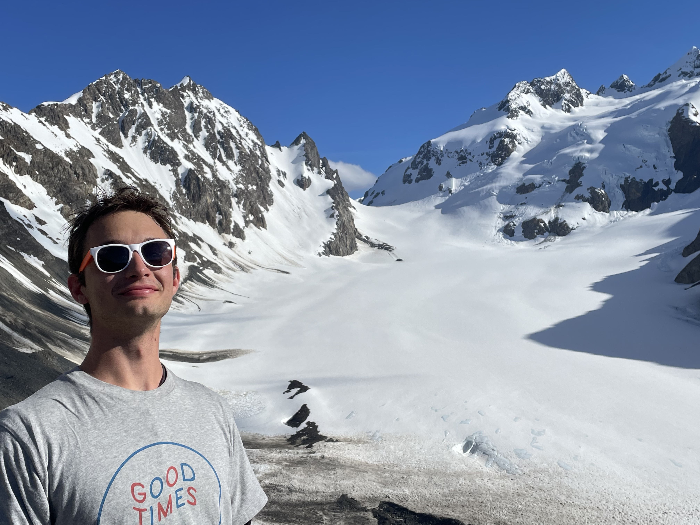

home
Welcome!
 Jonluca at the Blue Glacier in Olympic National ParkMy name is Jonluca, and I am a software engineer who is passionate about data science, increasing workflow efficiency, and human-to-software interactions. This site is to act as a personal portfolio for my experiences, my music, and anything else I find interest in.
I live with my two cats, Peanut and Butter, in Austin, Texas. Other than giving me a job in domestic disaster prevention, they are great.
I was a computer scientist at the Southwest Research Institute from June 2023 to June of 2024 after I graduated from Trinity University with a Bachelor of Science in Computer Science.
Music is the second reason I made this website.
I have been playing percussion
since 2012, and after 2019 my focus has largely been on the drumset and with my project
Retro Cowgirl.